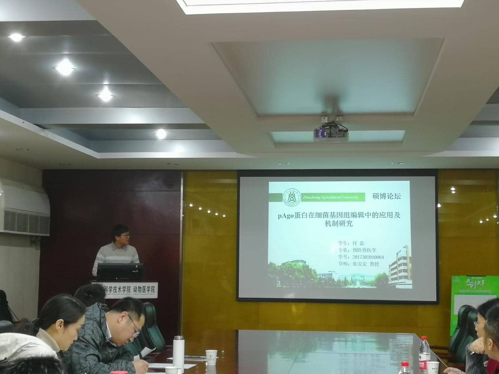

The Master and Doctoral Forum of the Academic Annual Meeting of the School of Animal Science and Medicine was successfully held
(Photo provided by Correspondent Li Daojie Guo Qinwen and Wang Haoqi) At 14:30 on December 7, 2019, the 12th Postgraduate, Master and Doctoral Academic Forum hosted by the Graduate Student Association of the School of Animal Medicine was held in B105 and B517 of the Animal Science Building It went well. Teachers Chen Shilin, He Jiujiu, Ding Yi, Peng Kemei, Liu Wanghong, Zhou Ming, Guo Mengyao, Jin Hui, Wei Hongkui, Zhou Zhongxin and Xu Zaiyan from the School of Animal Medicine attended the jury. The academic report competition was brilliant and attracted many teachers and students to come and listen.

Master Forum
At 2:30 in the afternoon, the game officially started. Master and doctoral candidates made
academic reports
in turn in B105 and B517 of the Department of Engineering respectively. The presenters explained the latest
research progress around their respective research directions, presenting a passionate academic feast for
teachers and students. Among them, Fu Lei explained how to use prokaryotic Ago protein to develop a new,
simple and efficient genetic manipulation tool for animal pathogens with the title of "Application and
Mechanism Research of pAgo Protein in Bacterial Genome Editing". The innovation of this technology lies in
Using pAgo protein can efficiently realize bacterial gene editing, without off-target phenomenon and species
specificity. When asked by the judges how to use ngago technology to carry out experiments, Fu Lei said that
they tried many methods, but they failed to achieve gene editing in Pasteurella. At that time, Han Chunyu
reported that ngago could realize gene editing in eukaryotic cells , so they tried to edit in prokaryotic
cells, and finally made a breakthrough; Liang Xiaohan took "The apicoplast localized pyruvate dehydrogenase
complex in Toxoplasma gondii is important for fatty acid synthesis but dispensable for parasite virulence"
as the title, combining reverse genetics and metabolomics By means of science, the biological function and
significance of pyruvate dehydrogenase in Toxoplasma gondii were proved, and the special type 2 pathway of
fatty acid synthesis in Toxoplasma gondii was described. This event also attracted many international
students to participate. The participation of international students enriched the content of this master's
and doctoral academic forum, and the report topics also included some cutting-edge topics of this
discipline. Among them, Doaa Higazy brought us a wonderful academic report on influenza virus. Finally, the
judges and teachers asked questions based on the contestants' reports, exchanged experience with the
contestants, and made comprehensive comments and scores from various aspects. At the end of the competition,
Mr. Peng Kemei made a concluding speech on this event. He encouraged more students to actively participate
in academic activities to enrich their learning career while carrying out scientific research.
This master-doctoral forum aims to create a good academic atmosphere of the college, inherit the fine
tradition of academic norms of the college, build a platform for mutual communication between graduate
students of the college, and contribute to the construction and development of the academic level of the
college. The successful holding of this academic forum has not only promoted the in-depth understanding of
the cutting-edge developments of the discipline by the graduate students of our school, but also broadened
their academic horizons, further improved the academic communication ability and academic quality of the
graduate students, and improved the quality of talent training in our school.
Finally, I would like to thank Yangxiang Group for its strong support for this event. Yangxiang Group is a
modern large-scale agricultural and animal husbandry enterprise mainly engaged in feed industry, pig raising
industry and meat food processing industry, and also engaged in breeding. The company is committed to
providing the public with healthy, safe and delicious food; it is committed to providing professional,
stable and efficient overall solutions for small and medium-sized farmers in the field of sows and piglets.
Relying on leading technological advantages and sincere service, the company became a leading enterprise in
the feed industry in Guangxi in 2000, and successively won the titles of "National Key Leading Enterprise of
Agricultural Industrialization", "National Feed Industry Science and Technology Innovation Advanced
Collective", "National Top 30 Feed Enterprises" ", "China Feed Industry Excellent Corporate Culture
Enterprise" and many other honors.